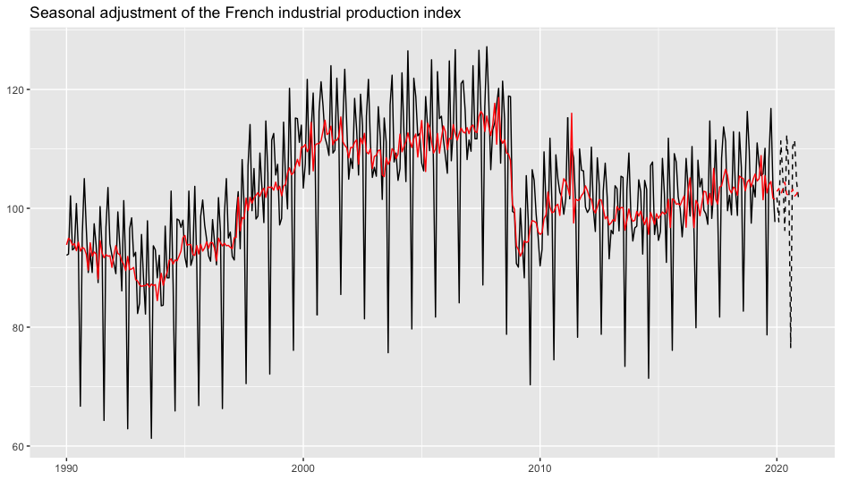
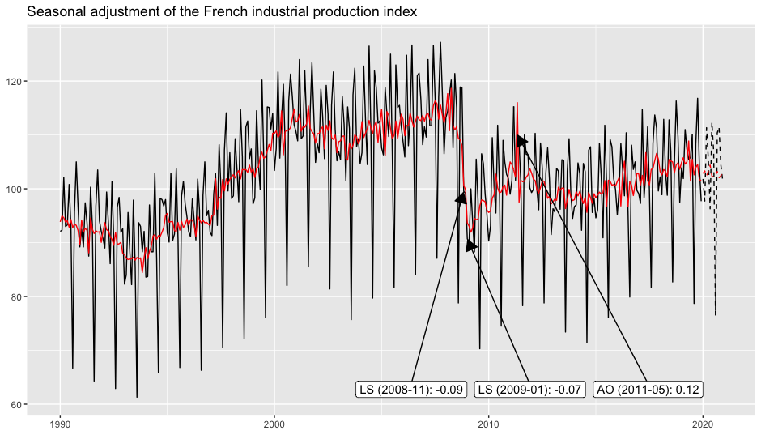
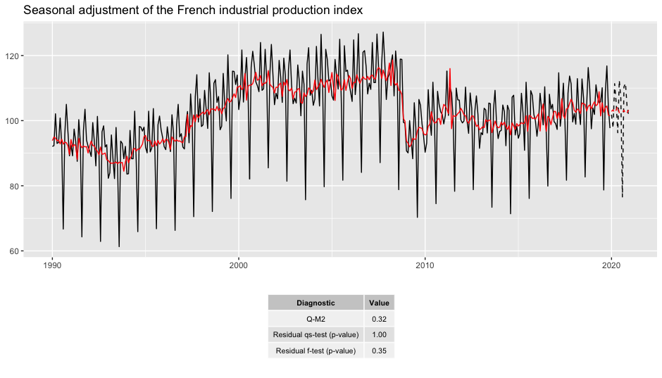
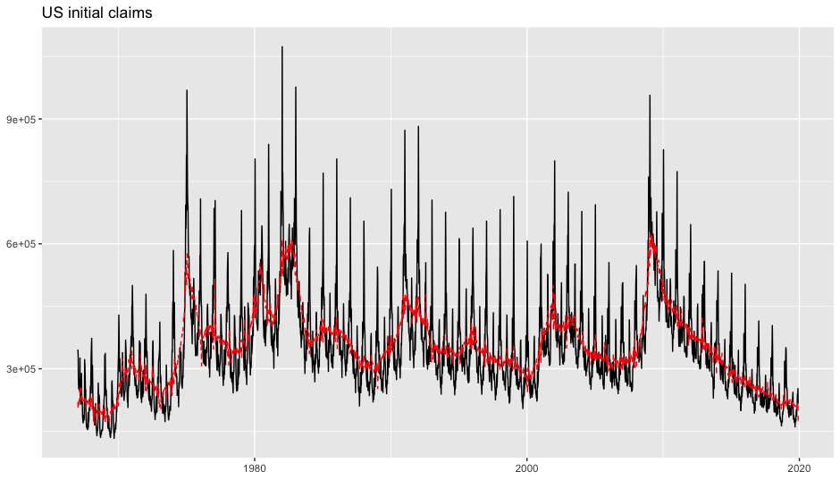
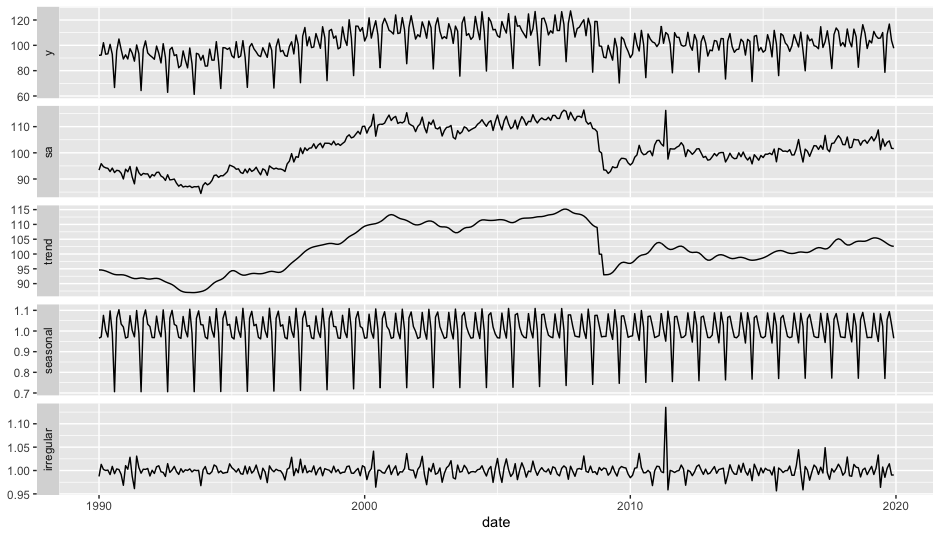
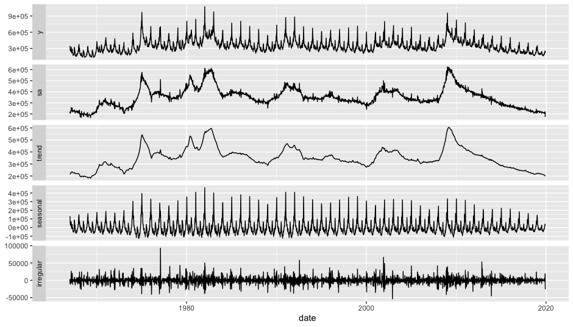
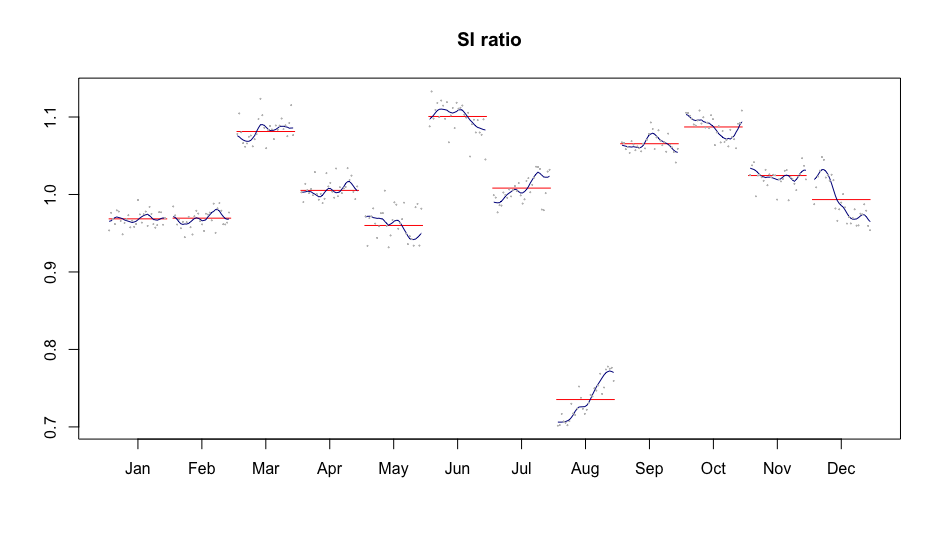

ggdemetra3 is an extension of ggplot2 to add seasonal adjustment statistics to your plots. The seasonal adjustment process is performed using the R packages associated with version 3 of JDemetra+, which is the seasonal adjustment software officially recommended for members of the European Statistical System (ESS) and the European System of Central Banks. rjd3x13 is used for X-13, rjd3tramoseats for TRAMO-SEATS, and rjd3highfreq for high-frequency seasonal adjustment methods. In addition, ggdemetra3 provides functions to visualize linear filters, weights, and trend-cycle estimation tools from the rjd3filters infrastructure.
Installation
Since rjdverse packages require Java SE 17 or a later version, the same requirements are also needed for ggdemetra3.
To install the developpment version:
- From r-universe:
install.packages("ggdemetra3", repos = c("https://aqlt.r-universe.dev", "https://cloud.r-project.org"))- From GitHub:
# install.packages("remotes")
remotes::install_github("AQLT/ggdemetra3")If you encounter issues with the installation of ggdemetra3, check the installation manual.
Usage
By default, the seasonal adjustment is performed using X-13-ARIMA with the predefined specification "RSA5c" (automatic log detection, automatic ARIMA and outlier detection, and trading day and Easter adjustments). If no new data or seasonal adjustment specification (method or spec) is provided, these parameters are inherited from the previously defined ones; therefore, you only need to specify the specification once. In the following examples, the seasonal adjustment will be performed with X-13-ARIMA with working day adjustment and no gradual Easter effect adjustment (which is the specification that makes the most economic sense for the industrial production index).
To add the seasonally adjusted series, along with forecasts of the input data and the seasonally adjusted series:
library(ggdemetra3)
spec <- rjd3x13::spec_x13("rsa3")
spec <- rjd3toolkit::set_tradingdays(spec, option = "WorkingDays")
p_ipi_fr <- ggplot(data = ipi_c_eu_df, mapping = aes(x = date, y = FR)) +
geom_line() +
labs(title = "Seasonal adjustment of the French industrial production index",
x = NULL, y = NULL)
p_sa <- p_ipi_fr +
geom_sa(component = "y_f(12)", linetype = 2,
spec = spec) +
geom_sa(component = "sa", color = "red") +
geom_sa(component = "sa_f", color = "red", linetype = 2)
p_sa
To add the outliers at the bottom of the plot with an arrow pointing to the data point and displaying the estimated coefficients:
p_sa +
geom_outlier(geom = "label_repel",
coefficients = TRUE,
ylim = c(NA, 65), force = 10,
arrow = arrow(length = unit(0.03, "npc"),
type = "closed", ends = "last"),
digits = 2)
To add the ARIMA model:
p_sa +
geom_arima(geom = "label",
x_arima = -Inf, y_arima = -Inf,
vjust = -1, hjust = -0.1)To add a table of diagnostics below the plot:
diagnostics <- c(`Q-M2` = "m-statistics.q-m2",
`Residual qs-test (p-value)` = "diagnostics.seas-sa-qs",
`Residual f-test (p-value)` = "diagnostics.seas-sa-f")
p_diag <- ggplot(data = ipi_c_eu_df, mapping = aes(x = date, y = FR)) +
geom_diagnostics(diagnostics = diagnostics,
table_theme = gridExtra::ttheme_default(base_size = 8),
message = FALSE) +
theme_void()
gridExtra::grid.arrange(p_sa, p_diag,
nrow = 2, heights = c(4, 1.5))
See the vignette for more details.
Note that ts objects cannot be directly used in ggplot2. To convert a ts or mts object to a data.frame, you can use the ts2df() function.
ipi_c_eu_df <- ts2df(ipi_c_eu)High-Frequency Seasonal Adjustment
The geom_sa() function is also compatible with methods used for high-frequency seasonal adjustment ("x11-extended", "fractionalairline", "multiairline", or "stl").
p_us_init_claims <- ggplot(data = usclaims[usclaims$date <= "2019-12-01",], mapping = aes(x = date, y = `Initial claims`)) +
geom_line() +
labs(title = "US initial claims",
x = NULL, y = NULL)
p_sa <- p_us_init_claims +
geom_sa(component = "sa", linetype = 2, frequency = 52,
method = "multiairline",
col = "red")
p_sa
autoplot()
The different components of seasonal adjustment models can also be extracted through calendar(), calendaradj(), irregular(), trendcycle(), seasonal(), seasonaladj(), and raw().
ggdemetra3 also provides autoplot() methods to plot seasonal adjustment models:

mod_hf <- rjd3highfreq::fractional_airline_decomposition(
usclaims[usclaims$date <= "2019-12-01", "Initial claims"],
period = 52)
autoplot(mod_hf, dates = usclaims$date[usclaims$date <= "2019-12-01"])
For X-13 and TRAMO-SEATS, the SI ratio can also be plotted using the siratioplot() and ggsiratioplot() functions:
siratioplot(mod)
Summary of Functions
ggdemetra3 provides a comprehensive set of tools for seasonal adjustment visualization and component extraction:
| Category | Functions | Description |
|---|---|---|
ggplot2 Geoms |
geom_sa()geom_outlier()geom_arima()geom_diagnostics()
|
Perform seasonal adjustment and add components/forecasts, outliers, ARIMA models, and diagnostic tables directly to your plots. |
ggplot2 Core |
init_ggplot() |
Initialize a plot with an already estimated SA model. |
Filters (rjd3filters) |
ggplot_coef()ggplot_gain()ggplot_phase()
|
Visualize linear filters, weights, and trend-cycle estimation tools from the rjd3filters infrastructure. |
| Component Extractors |
seasonal(), trendcycle()irregular(), seasonaladj()calendar(), calendaradj()raw()
|
Extract specific time series components from X-13, TRAMO-SEATS, or high-frequency decomposition models. |
| Quick Visualizations |
autoplot()siratioplot(), ggsiratioplot()
|
Plotting methods for seasonal adjustment models and Seasonal-Irregular (SI) ratios (Base R and ggplot2). |
| Utilities | ts2df() |
Convert ts or mts time series objects into a data.frame ready for ggplot2. |
Licensing
The code of this project is licensed under the European Union Public Licence (EUPL).